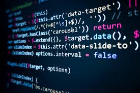

Інформатика (англ. informatics, computer science; нім. Informatik; рос. информатика) — теоретична та прикладна (технічна, технологічна) дисципліна, що вивчає структуру і загальні властивості інформації, а також методи і (технічні) засоби її створення, перетворення, зберігання, передачі та використання в різних галузях людської діяльності.
Основне теоретичне завдання інформатики полягає у визначенні загальних закономірностей, відповідно до яких створюється інформація, відбувається її перетворення, передавання та використання у різних сферах діяльності людини.
Прикладні завдання інформатики полягають у розробці найефективніших методів і засобів здійснення інформаційних процесів, у визначенні способів оптимальної наукової комунікації у самій науці та між наукою і виробництвом.
